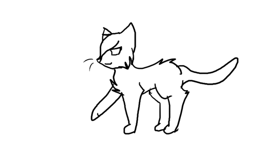

{{ nummer(stap) }}
{{ huidigeStap.titel }}
{{ p }}

HackaLOD 2026
Honderden Romeinse altaren, opgedragen aan een godin van de Scheldemonding door handelaren die veilig overvoeren.
{{ nummer(stap) }}
{{ p }}
Kies een jaar om de objecten te zien. Let op: de jaartallen zijn voor deze demo verzonnen, de objecten zijn echt.
{{ jaar.onderschrift }}
Geen objecten in {{ jaar.jaar }}.
Afbeelding niet beschikbaar